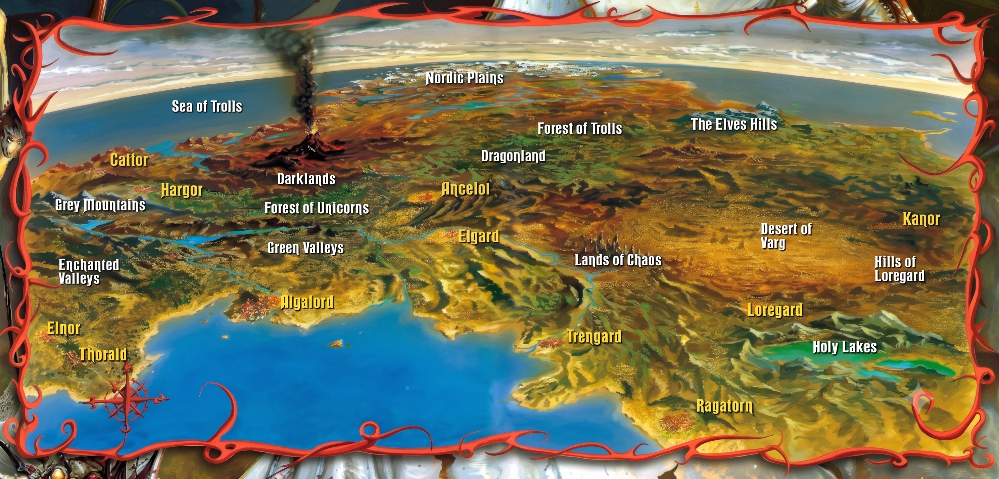

Rhapsody of Fire — mapa interativo dos álbuns

Aberturas instrumentais, interlúdios e momentos de transição/reflexão que as letras não amarram a um ponto específico do mapa.
A jornada narrada através dos álbuns, capítulo a capítulo. Clique nas faixas de cada capítulo para ver o resumo, a letra e o link do Spotify.
Os álbuns em ordem de lançamento, com todas as faixas.
Faixas fora dos álbuns principais — lados B, versões alternativas e bônus de edições especiais — que também se conectam à saga.
A história por trás das sagas, do choque primordial entre Kron e os deuses da Luz até a fundação da Ordem do Dragão Branco.
Personagens, lugares e artefatos das duas sagas. Clique numa faixa pra ver onde cada um aparece na história.